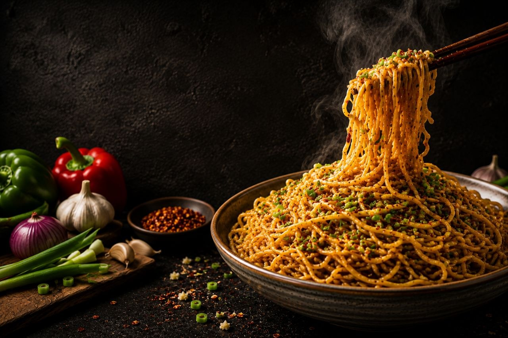

Aromatic noodles tossed in buttery garlic sauce with fresh herbs and bold flavors.
350 kcal
Easy
10 mins
10 mins
Boil the Hakka noodles until just cooked. Drain, rinse with cold water, and toss with a little oil.
Heat butter and oil in a wok. Add the chopped garlic and sauté until fragrant and lightly golden.
Stir in soy sauce, black pepper, chili flakes, mixed herbs, and a pinch of salt.
Add the cooked noodles and toss well until they are evenly coated with the garlic butter sauce.
Mix in the chopped spring onions and stir-fry for another 1–2 minutes over high heat.
Garnish with fresh parsley and serve hot for the best flavor.


Try delicious recipes only on Flavora.